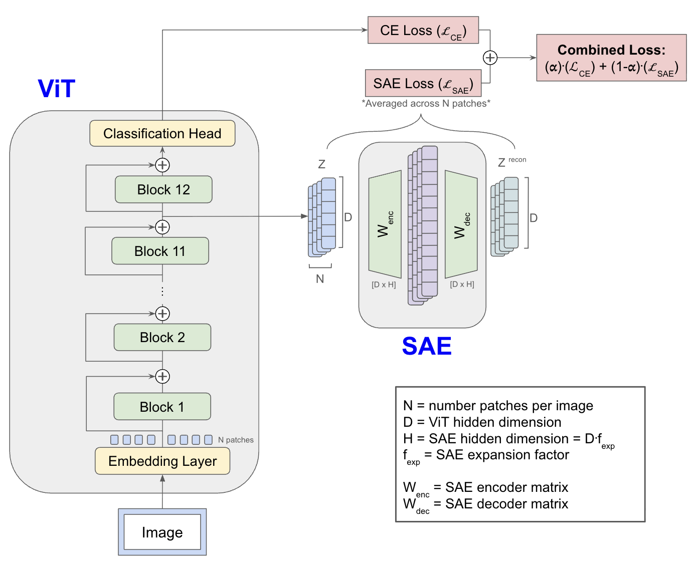
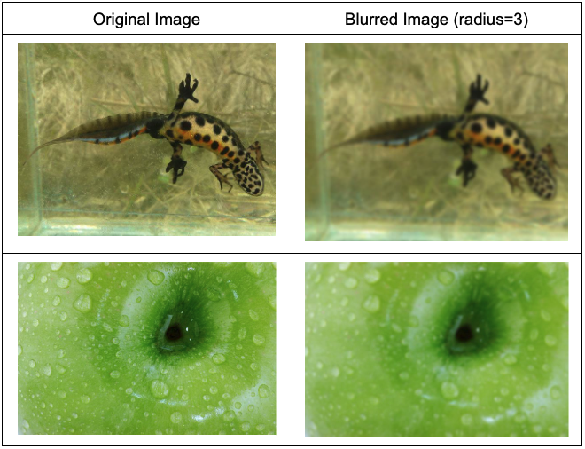
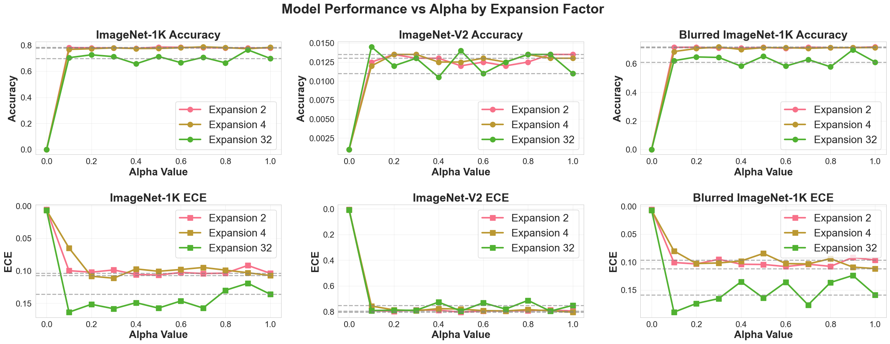
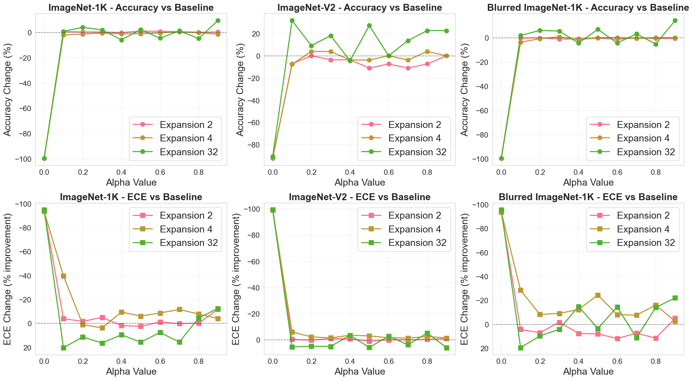
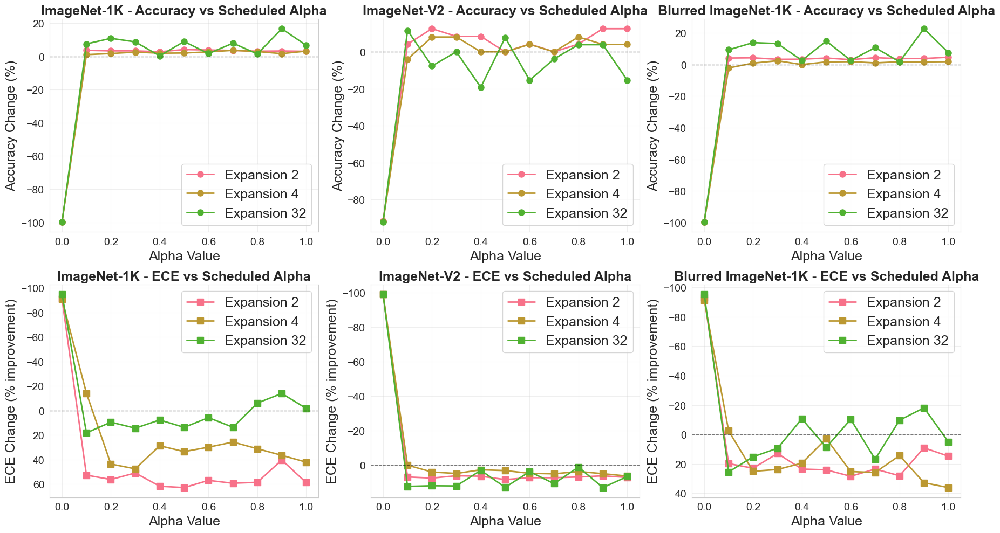
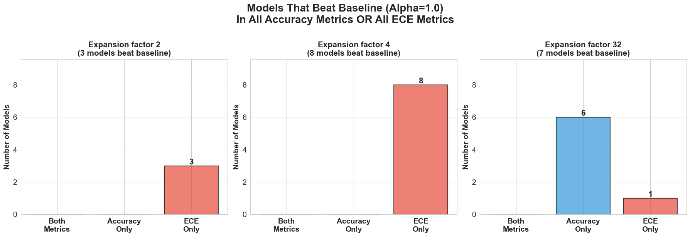

| Feature Disentanglement for Robustness: a Mechanistic Interpretability Approach | |||
| Hannah Gao | |||
| Final project for 6.7960, MIT | |||
| Feature Disentanglement for Robustness: a Mechanistic Interpretability Approach | |||
| Hannah Gao | |||
| Final project for 6.7960, MIT | |||
Recently, the mechanistic interpretability of large models has become a hot area of research, as we try to understand exactly how and what these deep networks are learning that enable them to perform so well. A common thread among such work is the desire for a decomposition of model internals (activations, weights, etc) into components that are human-understandable. In recent years, tools like sparse autoencoders and transcoders have become increasingly popular methods for attempting to decompose representations and modules within models in search for a human-interpretable and compositional explanation for model functionality.
Oftentimes such interpretability research, e.g. circuit-finding, activation interpretation, model steering, etc, is conducted in parallel to other deep learning objectives [17]. However, the direct connections between interpretability goals and other objectives like model robustness and downstream generalization is less explored [18]. For example, one study found that features extracted by SAEs perform better on OOD generalization and ontology construction than do the original embeddings learned by the model, although not consistently across architectures [1].
In this work, we attempt to further bridge the areas of mechanistic interpretability and robustness. We do this by augmenting a model with a classical interpretability tool, the SAE, to encourage models to internally learn representations that are more decomposable. Unlike most prior works that rely on manual human-identification of generative factors/features underlying the data, this project’s use of SAE provides a non-supervised method of learning feature disentanglement [2].
We fine-tune this augmented model with a new loss function that combines, in a controllable and schedulable way, the original base model’s loss function with the SAE’s loss function to encourage the model to learn sparser internal representations while still performing well on its intended task. Since robustness and sensitivity to distributional shifts in data are particularly relevant in the vision domain, we perform our analyses on a vision transformer model.
We find that introducing an SAE-augmented loss function when fine-tuning a ViT can outperform fine-tuning the original base model without the SAE-augmented loss. Notably, we find that an expansion factor of 32 with 𝛼=0.9 outperformed our bassline model on nearly all our evaluations on not only the original task performance but also robustness evaluations.
In this project, we examine whether promoting increased feature-separability of representations within a model can improve model robustness. Rather than only enforce disentanglement by enforcing some kind of information bottleneck (or sparsity penalty) in the final objective, as Burgess et al. [2] does, we apply this penalty within an internal layer of the model . The goal is to introduce separable representations in the model’s learned internal concepts rather than in the output itself.
To do this, we use the feature-disentanglement power of SAEs to quantify the separability of learned features within representations at a particular layer of a vision model. In particular, we use the pre-trained Google ViT which has 12 layers, a hidden dimension of D=768, and 12 attention heads per layer. This ViT was pre-trained for classification tasks on ImageNet-21k and fine-tuned on ImageNet-1K [9].
We provide a soft nudge for the ViT to learn more separable features from the post-layer-11 representations (inspired by Stevens et al. [11]) by attaching a ReLU SAE at the end of the layer, and then fine-tuning the automated model (ViT + SAE) on ImageNet-1K using a loss function combining the SAE loss with the original cross-entropy (CE) loss for image classification. We introduce a hyperparameter, 𝛼 (0 ≤ 𝛼 ≤ 1) that controls the weight placed on the CE loss vs the SAE loss.

Both the reconstruction error and L1-norms are calculated for individual patches and are averaged across all patches for an image. In this work, we additionally divide the L1-norms by D, the model dimension as to not let the penalty scale with representation dimension.
We fine-tune the augmented model using training and validation subsets of ImageNet-1k of size 10,000 and 1,000 images respectively. Given the small fine-tuning dataset size (as we were restricted by time and compute resources), we balanced all subsets taken from ImageNet-1k across the 1000 classes.
During fine-tuning we froze the image embedding layer as well as the first 10 transformer blocks so as to not affect foundational, low-level structures learned in earlier model layers. We used the AdamW optimizer with a learning rate of 0.001 and 0.01 weight decay.
We sweep 3 common SAE expansion factors: 2, 4, and 32 to examine the effect of providing larger representation spaces for disentanglement. We also sweep the various levels of 𝛼: [0.0, 0.1, 0.2, 0.3, 0.4, 0.5, 0.6, 0.7, 0.8, 0.9, 1.0]. 𝛼=0 is equivalent to only training on the SAE loss whereas 𝛼=1 is equivalent to only training on the CE loss.
𝛼=1 model serves as a baseline for comparison as it completely disregards the SAE loss and represents fine-tuning the model without any guidance towards sparser internal representations.
Since the SAE layer is initialized randomly but the other layers were pretrained, it may be beneficial to have the model focus on learning SAE weights at the beginning of fine-tuning while focusing more on tuning the unfrozen ViT layers once the SAE weights have been learned. Thus, we also run all tests with an 𝛼-scheduler , where 𝛼 grows linearly from 0.0 (SAE loss only) to 1.0 (CE loss only) across the 30 epochs, and compare this to using a fixed choice of 𝛼. Note that this 𝛼-scheduling is analogous to introducing differential learning rates on the ViT and the SAE, except that the balance of focus on the two parameter sets swap over time.
For all training, we train with mini-batch gradient descent for a maximum of 30 epochs and early stopping with a patience factor on the validation loss of 10 epochs. We extract the best-performing model on validation loss for downstream evaluations.
First, we test the models on a held-out subset of ImageNet-1k to evaluate its performance on the task it was fine-tuned on. We want to make sure that the model has not lost its capabilities that it was initially trained for.
Next, to evaluate the robustness of the fine-tuned ViT model, we evaluate the models in two ways. To evaluate model robustness to minor distribution shifts, we test the models on ImageNet-V2 with matched-frequency sampling [13].
To evaluate model robustness to image perturbations like filters, we also evaluate models on a set of blurred images from the held-out test subset of ImageNet-1k. We use a Gaussian blurring kernel with radius 3.

All three evaluation datasets have 2,000 image samples. For each dataset we calculate 2 metrics: accuracy and expected calibration error (ECE). We calculate ECE according to [14] using 15 equally bins on [0, 1], a common practice [15]. ECE ranges frmo 0 to 1, with lower ECE scores indicating better calibration, and serves as an indication of how well a model's prediction confidence aligns with actual its prediction accuracy. Splitting the n data points into m=15 bins, where bin i is denoted as Bi, ECE is calculated as follows:
In summary we provide the following 6 evaluation metrics for all fine-tuned models:
- ImageNet-1k accuracy and ECE
- ImageNet-v2 accuracy and ECE
- Blurred ImageNet-1k accuracy and ECE
In this section, we present the results of our experiments. Note that we always treat 𝛼=1.0 as the baseline model (i.e. where the SAE component is disregarded completely in the loss).
First, let us take a general look at how a fixed choice 𝛼 value affects accuracy and ECE of the fine-tuned models. Note that the y-axis for the ECE graphs are inverted for easier interpretation since lower ECE values and and higher accuracy indicate stronger performance. We separately analyze the effect of 𝛼 within each of the expansion factor groups, displaying them as separate line plots.

Unsurprisingly, we can see that using alpha=0.0, i.e. training only on the SAE loss, completely degrades performance. However, all other swept values of alpha seem to recover accuracy and ECE to approximately the same level as the baseline model. To more explicitly provide a comparison of the other alpha values to the baseline, we can visualize the percentage change in accuracy and ECE for every model relative to the corresponding baseline model in its expansion factor group. Once again, the y-axis for ECE change is flipped for easier interpretability.

First, looking at accuracy, we find that for 𝛼=0.1 to 𝛼=0.9, there is no clear pattern for any of the expansion factors, as they all seem to hover close to 0% change from the baseline. However, on ImageNet-V2, we see that the models tuned with an SAE expansion factor of 32 exceed baseline performance by a substantial margin for many choices of 𝛼, include 𝛼=0.1, 0.3, 0.5, 0.7, 0.8, and 0.9, with the best model outperforming its correpsponding baseline model by around 25%. For Blurred ImageNet-1K, we don't see significant improvement or degredation in accuracy for any 𝛼 other than 𝛼=0.0 (significant degradation) and 𝛼=0.9 (moderate improvement).
Next, we turn our attention to ECE. Note that the y-axis is inverted. We will refer to models with lower ECE values as being more highly calibrated. We find that for the smaller expansion factors (2, 4), there is not much improvement from the baseline in terms of calibration on either ImageNet-1k or ImageNet-V2; for the larger expansion factor (32), there is actually degredation in calibration on both datasets for most choices of 𝛼, particularly smaller ones. On the Blurred ImageNet-1k dataset, we find that several choices of 𝛼 lead to stronger calibration than the baseline for the larger 2 expansion factor groups (i.e. 4 and 32). In fact, for expansion factor 4, we see that all choices of 𝛼 lead to strictly higher calibration on Blurred ImageNet-1k than the baseline.
𝛼=0 consistently yields highly calibrated models, which initially seems to contradict their low accuracies. However, since ECE is a function of the difference between confidence and accuracy, poorly-performing models can still be well calibrated as long as their confidence matches their accuracy of prediction.
Next, we examine take a look at models fine-tuned with a scheduled 𝛼, and we plot the percent change in accuracy and ECE of all the fixed 𝛼 models relative to the scheduled 𝛼 model within the same expansion group.
First, looking at accuracy we find that 𝛼=0 produces exceedingly poor results. For other static choices of 𝛼, we find that, for the most part, results are mixed and there is not a consistent trend. However, we do see that on ImageNet-V2, the baseline model (𝛼=1.0) actually performs nearly 20% worse than does using the scheduled 𝛼 when using expansion factor of 32. We also see that on Blurred ImageNet-1k, all fixed levels of 𝛼 (except 0.0) yield higher accuracies than using a scheduled 𝛼.
Turning our attention to ECE, we notice interestingly that using a static 𝛼 yields worse calibration than using a scheduled 𝛼, and this is pretty consistent across the 3 datasets as well as expansion factors (minus a few cases).


We find that when using expansion factor 2, three of the models exceeded the baseline on the ECE metric across all 3 datasets. When we use an expansion factor of 4, eight of the models consistently exceeded the baseline on the ECE metric. However, neither of these groups consistently exceeded the baseline on accuracy.
However, when looking at expansion factor 32, we see that 6 models exceeded the baseline model on accuracy. Below are model cards showing the performance of each of these 6 models and their performance on the different datasets as well as a comparison to their baseline. Positive changes in accuracy and negative changes to ECE are considered improvements.
We can see that using an expansion factor of 32 with 𝛼=0.9 (i.e. loss function focuses mostly on CE loss but takes into account SAE loss as well) yields strong results, outperforming the baseline model (𝛼=1.0) across nearly all (5/6) of our metrics except for ECE on ImageNet-V2. Not only did this model perform better on the downstream task that it was trained for (ImageNet-1K), it outperformed the baseline on robustness evaluations on ImageNet-V2 (22.73% increase in accuracy) and a blurred version of a subset of ImageNet-1K.
In conclusion, this project demonstrates the potential of sparse autoencoders (SAEs) not only as a way to extract interpretable features from large models but also as a structural augmentation during training to enhance the robustness of vision models. By fine-tuning a ViT with a combined loss function that incorporates the SAE loss, we observed, in several cases, improvements the model's performance on the original downstream task it was trained for (i.e. classification on ImageNet-1K) and additionally on robustness evluations (i.e. on ImageNet-V2 and Blurred ImageNet-1k).
We found that, in general, larger expansion factors like 32 produced more accurate models when evaluated on the 3 datasets. A possible explanation for this is that expansion factors like 2 and 4 are too small for the model to meaningfully disentangle its representation into sparse components, so including the SAE loss in the final loss function pushes the model towards some misaligned objective that reduces SAE loss without actually properly separating out sparse features. We found that scheduling 𝛼 leads to stronger calibration compared to using static choices of 𝛼, although this is less meaningful given that low ECE can be achieved (and was observed) even with inaccurate models. In conclusion, we observed that forcing the model to learn sparser internal representations using an SAE-augmented loss function could increase model robustness and original task performance by large margins, especially when the expansion factor is large.
Future work could explore the use of more recent SAE architectures, larger and more diverse robustness datasets, and additional evaluation metrics (beyond accuracy and ECE) to further validate and extend these findings. Additionally, applying this approach to other model architectures (beyond ViTs) could provide further insights into the generalizability of using SAEs as an architectural augmentation for training more robust models.
A huge thank you to all the staff of 6.7960 for a great semester. I am especially grateful for all the feedback I received on this project from the course instructors and TAs that I bounced ideas off of. I have learned a lot and really enjoyed this class!
AI acknowledgement: The code for building and training the model on a hyperparameter sweep as well as evaluating the models were written by me. As suggested by course staff, I used AI to generate nice plots/visualizations based on all the data I had logged from my training and for html formatting help.